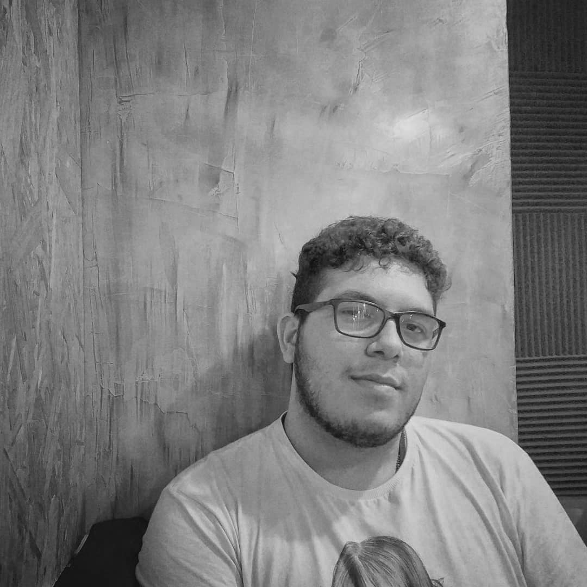
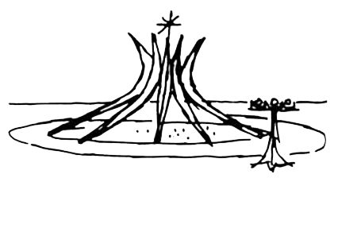

sobre nós.

marco rocheles
responsavel por front end, ui/ux design e todo o conteúdo desse site
nascido em recife e criado desde bebê em são paulo. em 2014 me ingressei na ETEC e vi na tecnologia oportunidades para desenvolver habilidades lógicas e conhecer um mundo que tenho paixao oriunda de experiências com jogos e peças de computador.
segui caminho pela arquitetura onde tive oportunidade de desenvolver minhas habilidades como criatividade etc e em 2021 retornei à tecnologia, agora para ficar e buscando alinhar os dois mundos.
